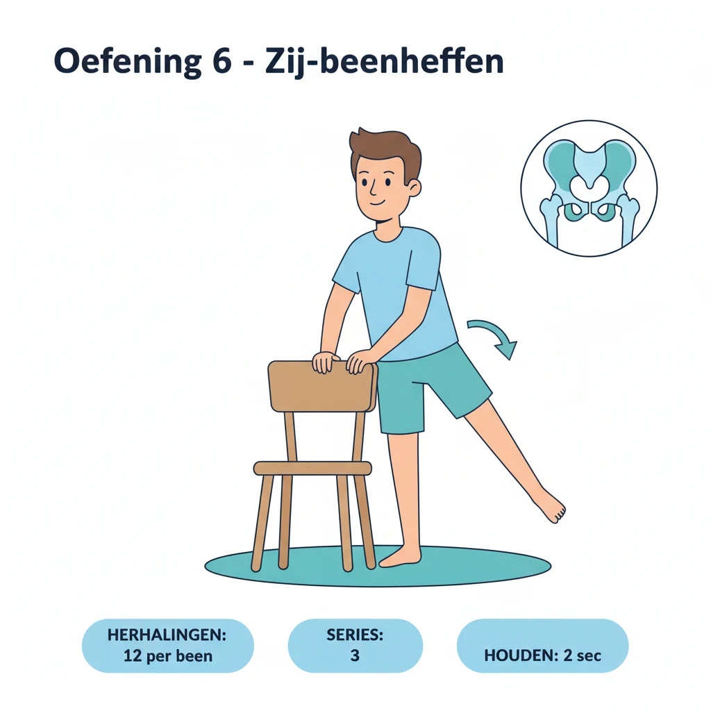

Patellofemoraal pijnsyndroom — in de volksmond knieschijfpijn of runner's knee — is de meest voorkomende oorzaak van pijn aan de voorzijde van de knie. Het treft zowel sporters als mensen die nauwelijks bewegen, en het is een van de weinige knieklachten waarbij een scan meestal niets afwijkends toont. Precies dat maakt het frustrerend: de pijn is echt, maar er is geen scheur of breuk om naar te wijzen. Het goede nieuws is dat oefentherapie hier bijzonder goed werkt — op voorwaarde dat u de juiste spieren traint en lang genoeg volhoudt. In dit artikel legt PhysioVisit uit hoe u knieschijfpijn herkent, wat de echte oorzaak is en welk schema u thuis kunt volgen.
Goed om te weten
Jarenlang werd knieschijfpijn toegeschreven aan een "zwakke binnenste quadriceps" die de knieschijf scheef zou trekken. Dat beeld is achterhaald. De huidige inzichten wijzen vooral naar een overbelasting van het patellofemorale gewricht, waarbij zwakke heupspieren en een te snelle toename van belasting minstens even belangrijk zijn als de knie zelf.
Wat is Patellofemoraal Pijnsyndroom?
De patella of knieschijf glijdt bij elke buiging en strekking van de knie door een groeve aan de voorzijde van het dijbeen. Dat contactvlak tussen knieschijf en dijbeen heet het patellofemorale gewricht. Bij elke stap, elke trap en elke hurkbeweging wordt de knieschijf tegen het dijbeen gedrukt — bij traplopen tot drie a vier keer uw lichaamsgewicht.
Bij patellofemoraal pijnsyndroom raakt dat gewricht overbelast: het weefsel achter en rond de knieschijf wordt gevoelig en pijnlijk. Er is geen scheur, geen ontsteking en meestal geen zichtbare schade. De klachten ontstaan geleidelijk en zijn typisch:
- Een doffe, moeilijk aan te wijzen pijn voor, rond of achter de knieschijf
- Erger bij trappen aflopen, hurken, knielen, springen of fietsen met een laag zadel
- Het bioscoopteken: stijfheid en pijn na lang zitten met gebogen knieën, bijvoorbeeld na een film of een lange autorit
- Soms een krakend of knisperend gevoel bij het buigen (crepitatie) — op zich onschuldig
- Geen duidelijke zwelling, warmte, blokkade of slotgevoel
Waar Komt die Pijn Vandaan?
Knieschijfpijn is bijna nooit het gevolg van één oorzaak. Meestal is het een optelsom:
| Factor | Wat gebeurt er? | Wat doet u eraan? |
|---|---|---|
| Te snelle belastingtoename | Plots meer stappen, lopen, traplopen of een nieuwe sport | Tijdelijk terugschroeven, daarna trager opbouwen |
| Zwakke heupspieren | De knie valt naar binnen bij elke stap, waardoor de knieschijf scheef belast wordt | Bilspieren en heupabductoren versterken |
| Zwakke quadriceps | De knie wordt minder gedempt bij landen en traplopen | Pijnvrije krachttraining, geleidelijk zwaarder |
| Stijve hamstrings en kuiten | Meer druk op het patellofemorale gewricht bij buigen | Dagelijks rekken, 30 seconden per spier |
| Langdurig zitten | De knie staat urenlang in de meest belastende hoek | Elk half uur even strekken en rechtstaan |
De rode draad: het gewricht krijgt meer belasting dan het op dat moment aankan. De oplossing bestaat dus uit twee delen die u tegelijk aanpakt — de belasting tijdelijk verlagen én de belastbaarheid opbouwen.

Het Oefenschema in Vier Fases
Herstel van knieschijfpijn verloopt in fases. De verleiding is groot om meteen zwaar te trainen of om net helemaal te stoppen met bewegen — allebei werken ze niet. Onderstaand schema bouwt geleidelijk op:
Pijn kalmeren
3× per week
Zwaarder belasten
Onderhoud 2×/week
Fase 1 (week 1–2) — de pijn kalmeren
Schroef tijdelijk terug wat de pijn uitlokt: minder trappen aflopen, geen diepe squats of lange hurkhoudingen, en beperk lang zitten met gebogen knieën. Stop niet met bewegen — wandelen op vlak terrein en fietsen met een hoog zadel mag doorgaans probleemloos. Wie de knie volledig ontlast, verzwakt de spieren en verergert het probleem op termijn. Een hometrainer met een hoge zadelstand (aan €2 per dag bij PhysioVisit) is in deze fase een handig hulpmiddel: u beweegt de knie in een klein, pijnvrij bereik zonder impact.
Fase 2 (week 3–6) — kracht opbouwen
Dit is de kern van de behandeling. Drie keer per week, telkens 20 tot 25 minuten:
- Zij-beenheffen (staand of zijlig): 3 × 12 per been
- Bruggetje (bilspieren, liggend op de rug): 3 × 12, 2 seconden vasthouden
- Quadriceps set: knie gestrekt, dijspier 5 seconden aanspannen: 3 × 10
- Mini-squat tot 45 graden, met steun van een stoel: 3 × 10, traag
- Rekken van hamstrings, kuiten en de voorzijde van het bovenbeen: 3 × 30 seconden
De regel voor pijn: tijdens en na de oefening mag u milde pijn voelen, maar die moet binnen 24 uur volledig weggezakt zijn. Is de knie de dag nadien pijnlijker? Dan was de dosis te hoog — halveer het aantal herhalingen en bouw trager op.
Fase 3 (week 7–10) — functioneel belasten
Nu bouwt u toe naar de bewegingen die eerder pijn deden. Squats worden dieper, u traint gecontroleerd trapafgaan (traag afdalen op één been, met steun aan de leuning) en voegt eenbenige oefeningen toe zoals de step down van een lage trede. Precies deze bewegingen leren uw knie opnieuw belasting op te vangen.
Fase 4 (week 11–12) — hervatten en volhouden
Sport wordt geleidelijk hervat volgens de tienprocentregel: verhoog uw wekelijkse volume met maximaal 10 procent. En cruciaal: blijf oefenen. Twee onderhoudssessies per week gedurende minstens twee tot drie maanden na het verdwijnen van de pijn voorkomen de terugval waar veel mensen in trappen.
Wanneer is het géén patellofemoraal pijnsyndroom?
Laat uw knie nakijken door een arts bij: duidelijke zwelling of warmte, een slot- of blokkadegevoel, een gevoel van doorzakken, pijn na een acuut trauma of een val, of pijn die 's nachts in rust aanwezig blijft. Dat wijst eerder op een meniscus-, kraakbeen- of bandletsel, of op beginnende knieartrose. Een patellaluxatie — waarbij de knieschijf effectief uit de kom schiet — is eveneens een ander verhaal.
Zes Tips voor het Dagelijkse Leven
- Trap op met het pijnlijke been, trap af met het gezonde been eerst. Afdalen belast het patellofemorale gewricht het zwaarst.
- Zet uw bureaustoel hoger zodat uw knieën minder ver gebogen staan, en sta elk half uur even recht.
- Zet uw fietszadel hoger: een te laag zadel dwingt de knie in diepe flexie onder belasting — een klassieke uitlokker.
- Draag schokdempend schoeisel en vervang loopschoenen tijdig; wandel de eerste weken op vlak terrein in plaats van heuvelop en -af.
- Gebruik ijs 15 minuten na een dag met veel belasting. Dat geneest niets, maar maakt de knie rustiger zodat u de volgende dag kunt oefenen.
- Werk aan overgewicht waar mogelijk: elke kilo minder betekent drie tot vier kilo minder druk op het gewricht bij traplopen.
Kinesitherapie aan Huis bij Knieschijfpijn
Knieschijfpijn is bij uitstek een klacht waarbij begeleiding het verschil maakt. Niet omdat de oefeningen ingewikkeld zijn, maar omdat de dosering het lastige onderdeel is: te weinig belasting geeft geen resultaat, te veel lokt een opstoot uit. Een kinesitherapeut beoordeelt bovendien uw beweegpatroon — zakt uw knie naar binnen bij een squat of bij het traplopen? — en corrigeert wat u zelf niet ziet.
PhysioVisit biedt kinesitherapie aan huis in de regio Grimbergen, Strombeek-Bever, Humbeek, Beigem en Koningslo. Wij komen bij u thuis, kijken uw beweegpatroon na op uw eigen trap en met uw eigen stoel, stellen een schema op maat op en passen dat elke twee weken aan. Voor de orthopedische revalidatie van de knie werkt dat vaak beter dan een oefenschema op papier: u leert de oefeningen op de plek waar u ze ook echt gaat uitvoeren. Ontdek ook waarom kinesitherapie aan huis voor veel patienten voordeliger uitpakt dan een praktijkbezoek.
Veelgestelde Vragen over Knieschijfpijn
Knieschijfpijn die Maar Niet Overgaat?
Onze kinesitherapeuten komen aan huis in de regio Grimbergen en stellen een oefenschema op maat op. Materiaal zoals een hometrainer (€2/dag) of Kinetec (€17/dag) leveren wij in heel België.
Conclusie
Patellofemoraal pijnsyndroom is geen schade maar een belastingprobleem. Er is meestal niets kapot: het gewricht heeft simpelweg meer te verwerken gekregen dan het aankon. Dat verklaart waarom rust alleen niet werkt — zodra u de draad weer oppikt, keert de pijn terug. Wat wél werkt, is de belasting tijdelijk verlagen en tegelijk de belastbaarheid opbouwen met gerichte kracht voor heup en quadriceps, consequent volgehouden gedurende drie tot zes maanden.
Komt u er zelf niet uit, of blijft de pijn terugkeren na elke opbouw? Dan is professionele begeleiding zinvol. Neem contact op met PhysioVisit op 0474 87 80 21: onze kinesitherapeuten Timothy en Charlotte komen aan huis in de regio Grimbergen en stellen samen met u een realistisch plan op.